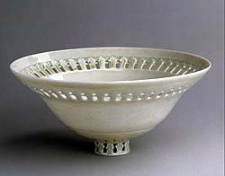

| Ceramics at the MET
Selected ceramics from the Metropolitan Museum of Art
Article by Steven Goldate
The Metropolitan
Museum of Art has an extensive collection of ceramics. The
online ceramics collection does not have a dedicated area, but none-the-less,
ceramics are there. You can find plenty of great works in the following
sections:
American
Decorative Arts
Steven's choices:
Bowl,
1924, Adelaide Alsop Robineau
Bowl,
sugar, ca. 1800, Rudolph Christ
European
Decorative Arts
Steven's choices:
Harlequin
Figure, 18th century
Plate,
18th century
Maiolica
Steven's choices:
Pharmacy
Jar, late 15th century
Armorial
Plate (Tondino), ca. 1520–25
Plate
(Piatto), 1532
Greek
and Roman Arts
Steven's choices:
Kylix
(drinking cup), ca. 470 B.C.
Lekythos
(oil flask), ca. 440 B.C.
Standing
draped female, late 4th–early 3rd century B.C.
Aryballos,
ca. 570 B.C.
Chinese
Export Porcelain
Steven's choices:
Punch
Bowl, 1812
Dish,
ca. 1735–40
Islamic
Art
Steven's choices:
Bowl,
10th century
Dish,
ca. 1525–30
Bowl,
Late 12th–early 13th century
Art
of the Ancient World East and West
Steven's choices:
Isis-Aphrodite,
Egypt, 2nd century A.D.
Female
Dancer, China, 2nd-1st century B.C.
Arts of Africa, Oceania, and the Americas
Steven's choices:
Feline-Head
Bottle, Peru, 6th–4th century
Nampeyo
Jar, ca. 1900
Chungo
Brothers Dough Bowl, Diego Romero, 1994
Much more can also be found at the Special
Topics pages.
More Articles
|